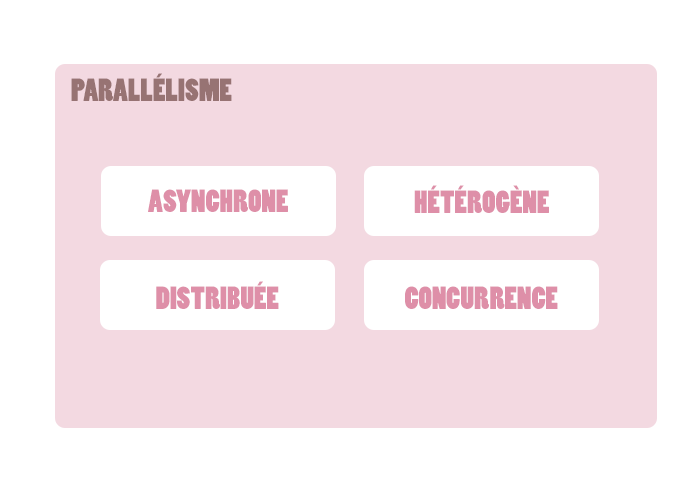

Erlang

On va parler de concurrence
On va un peu parler de Erlang...
C'est ici que la magie opère :v
Le futur de Erlang et ce qu'il amène !
De plus en plus d'unité de calcul
Oui et une table n'est pas un mobilier...
On admet qu'un programme informatique est une collection de piles sémantiques ordonnancées avant
d'être exécutés dans pile d'exécution ;
On considère les acteurs comme les seules fonctions primitives nécéssaires pour la programmation concurrente.
Les acteurs communiquent par envoi/réceptions de messages. En répondant à un message, un acteur peut effectuer un calcul,
instancier d'autres acteurs ou envoyer d'autres messages.
(Il existe une certaine homologie entre les acteurs et les objets qui eux aussi communiquent par envoi/réception de message...)
Un des apports principaux du modèle acteur est que, quand il est implémenté dans un langage,
il fournit une abstraction sur des mécanismes liés à l'exécution simultanée.
Cette abstraction permet généralement de s'affranchir de concepts/outils complexes,
comme par exemple la synchronisation par verrou Et il peut être implémenté à niveau logiciel..
Erlang est développé (avec une toute petite équipe) en extension à la thèse
de Joe Armstrong pour répondre à ces problématiques.
C'est en partie à cause (ou grâce) à JAM que la syntaxe de Erlang est ... déroutante.
Une bibliothèque standard + une collection d'outils + une collection d'architecture applicative.
Comportements et classes statiquement abstraites.
Comme les acteurs fournissent une abstraction, les comportements OTP permettent
d'implémenter des cas de figures complexes au moyen d'interfaces communes.
OTP est une collection de "design-principles" éprouvée
et hautement réutilisable !
Bogdan/Björn's Erlang Abstract Machine